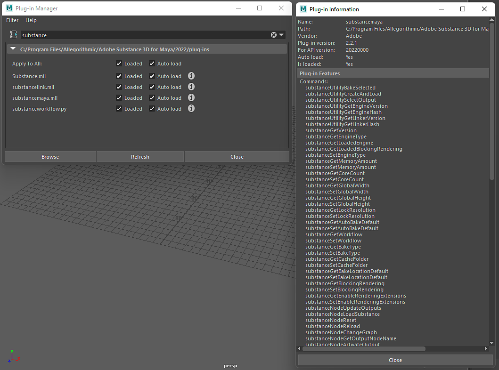

The Substance in Maya plugin can be scripted. An exposed API allows Substance commands to be used in scripts for creating and managing Substance materials. You can access the available commands by going to the plugin information.
Windows>Settings/Preferences/Plugin Manager and search for the substancemaya.mll file.
Click the "i" button to see the available commands

This script will load an sbsar file and apply the Arnold render workflow to the selected mesh. To use the script, please follow the example listed here.
import maya.cmds as cmds
def _connect_place2d(substance_node):
""" Connects the place2d texture node to the Substance node """
place_node = cmds.shadingNode('place2dTexture', asUtility=True)
connect_attrs = [('outUV', 'uvCoord'), ('outUvFilterSize', 'uvFilterSize')]
for out_attr, in_attr in connect_attrs:
cmds.connectAttr('{}.{}'.format(place_node, out_attr),
'{}.{}'.format(substance_node, in_attr))
def _find_shading_group(node):
""" Walks the shader graph to find the shading group """
result = None
connections = cmds.listConnections(node, source=False)
if connections:
for connection in connections:
if cmds.nodeType(connection) == 'shadingEngine':
result = connection
else:
result = _find_shading_group(connection)
if result is not None:
break
return result
def _apply_substance_workflow_to_selected(substance_file, workflow):
""" Imports a mesh into Maya and applies the shader from a
Substance workflow to it """
geometry = cmds.ls(geometry=True)
# Create the substance node and connect the place2d texture node
substance_node = cmds.shadingNode('substanceNode', asTexture=True)
_connect_place2d(substance_node)
# Load the Substance file
cmds.substanceNodeLoadSubstance(substance_node, substance_file)
# Apply the workflow
cmds.substanceNodeApplyWorkflow(substance_node, workflow=workflow)
# Acquire the shading group and apply it to the mesh
shading_group = _find_shading_group(substance_node)
cmds.select(geometry)
cmds.hyperShade(assign=shading_group)
def demo_load_sbsar_workflow():
""" Acquires an sbsar from a file dialog, loading and applying it to
any selected mesh """
file_filter = 'Substance (*.sbsar);;'
files = cmds.fileDialog2(cap='Select a Substance file', fm=1, dialogStyle=2,
okc='Open', fileFilter=file_filter)
if files:
substance_file = files[0]
_apply_substance_workflow_to_selected(substance_file,
cmds.substanceGetWorkflow())
if __name__ == '__main__':
demo_load_sbsar_workflow()
An exposed API allows Substance commands to be used in scripts